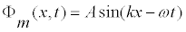
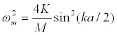

Driven Oscillator Chain models a one-dimensional linear array of coupled simple harmonic oscillators driven at one end and attached to a sliding rod shock absorber at the other. The mass and damping of the shock absorber are chosen to eliminate reflections at the driving frequency.
A traveling wave propagates along the oscillator chain in the positive x-direction with a wave function Φ(x,t) that depends on position and time

where A is the amplitude, ω=2πf is the angular frequency, and k=2π/λ is the wave number. The angular frequency and wave number are related though the dispersion relationship
.
An interesting and important feature of this dispersion relationship is that it predicts a maximum frequency wH=(4K/M)1/2. What type of motion is observed if the diving frequency is greater than this maximum?
The coupled oscillator (beaded string) model is discussed in most intermediate mechanics textbooks.
There are many laboratory and computer experiments that build on the beaded string model.
This simulation was created by Wolfgang Christian using the Easy Java Simulations (Ejs) modeling tool. You can modify this simulation if you have Ejs installed by right-clicking within a plot and selecting "Open Ejs Model" from the pop-up menu. Information about Ejs is available at: <http://www.um.es/fem/Ejs/>.